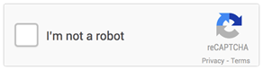

CAPTCHA Accessibility
Associated themes:- Web
- Advanced
Publication date
Introduction #
A CAPTCHA (“Completely Automated Public Turing-test to tell Computers and Humans Apart”) is an automated test aimed at telling apart a human user from a software program. It is often used on forms to prevent spam.
There are several types of CAPTCHAs, most of them are visual tests that ask the user to type a series of deformed letters displayed on the screen.

Example of a visual CAPTCHA
First analysis: CAPTCHAs and users #
CAPTCHAs are often problematic, even for savvy users. It is often necessary to undergo several trials before giving the right answer to a CAPTCHA. For some users a CAPTCHA is a no-go, plain and simple. For example a blind user cannot solve a visual CAPTCHA. Even if some sites provide alternatives, like audio CAPTCHAs in addition to visual CAPTCHAs, it actually seldom works. It’s even the first source of difficulty quoted by visually impaired users according to WebAIM’s latest survey at the end of 2017:
CAPTCHAs pointed out by visually impaired users as most common annoyance (2017 WebAIM survey)
The boom in computation means enables bots and other programs to be more and more efficient. It is quite easy nowadays to write a program that guesses the text in an image or vocalised in an audio file.
For the CAPTCHA to stay efficient against bots, it is necessary to augment deformations in the picture and audio file, thus making it even harder for users to get it right.
This is why Google is trying to find alternatives to differentiate between a human user and a robot. They now propose “No CAPTCHA”, a plain checkbox from the user’s point of view. It uses additional information such as screen resolution, mouse pointer moves, the time it takes to fill a form, etc.

No CAPTCHA by Google
Even if this solution is more efficient, it is still not satisfactory from an accessibility point of view because, in case of doubt, a standard CAPTCHA is displayed. It is often the case for a user who does not use a mouse but a keyboard, or for a screen reader user (visually impaired users). You must thus always provide an alternative contact means (email, telephone, etc.) in the case when the CAPTCHA cannot be filled.
Between users that cannot input the CAPTCHA text and those who don’t understand what’s expected of them, adding a CAPTCHA is not benign regarding the audience of a site. Considering CAPTCHAs are problematic to many users, the first recommendation is to not use a CAPTCHA.
Second analysis: CAPTCHA and security #
In a 2014 article by Google, we read that artificial intelligence get a 99.8% score when solving “even the most difficult variant of distorted text” – thus getting a better score than a real user! Services can guess which font was used in an image, or whether the image contains an object (a cat, a car, a hat, etc.). Same conclusion in this more recent article Breaking CAPTCHA Using Machine Learning in 0.05 Seconds.
Considering this (users bouncing from the site in frustration and uncertain security), we come back to our first recommendation: do not use a CAPTCHA.
Recommended solutions #
Our idea is, first, to determine risks and to ask ourselves the following questions:
- What are the risks in case of an attack?
- What is the real need, between bouncing bots off and providing a secured solution?
According to our answers, we will be able to provide the solution most fit to the problem.
HoneyPot and Time measuring, two simple techniques to put in place to identify bots #
These two techniques are transparent for the user, and the risks they pose are very limited.
The first solution consists in adding a hidden field in the form. This will never be filled by a user. If you detect server-side that the field was filled, it must be malevolent software.
The second technique consists in measuring the time it takes for the user to fill the form. If it is very fast, there’s a good chance that it’s malevolent software.
Anti-spam and denylist solutions to remove bot requests #
It is also possible, server-side, to triage information with anti-spam software and automatically remove submissions from malevolent software by analysing content data and the originating IP.
A logical or mathematical test, also called textual CAPTCHA #
This is done through a simple sentence asking the user to copy a word, to solve a simple mathematical operation, etc.
- “Copy the word: ‘House’”
- “How much is 2 plus 2?”
- “Which animal meows?”
- “What colour is the sky?”
Under the condition that the questions stay very basic, this kind of CAPTCHA will not be problematic to users.
A good practice in this case will be to provide a refresh solution, which will be very helpful for people with cognitive impairments.
An email, SMS or phone verification for reinforced security #
This solution consists in sending an email, an SMS or in calling directly the user to make sure they can confirm the transaction, by clicking on a link or by sending the code they received.
This solution is at the same time more constraining for the user who must communicate personal information and more tedious to put in place, but it’s a very efficient solution when the security level needs to be high.
Summary #
There is no perfect solution, either for the user or security-wise. You should opt for the best technique according to the service provided. Also, it is important in the case of attack to have logs to analyse and to prepare for further attacks.
Test with real users #
In any event, these captchas and their alternatives must be supplemented by user tests of assistive technologies to ensure the usability of the solution put in place.